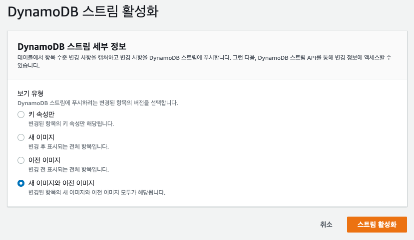

이번 랩은 DynamoDB를 사용해 사용자 정보와 대전 결과를 저장할 것입니다. 우리는 간단한 정보를 저장하고 또한 이 정보는 Web을 통해 접근할 수 있는 리더 보드에 사용될 것입니다. 추가로, DynamoDB 앞단에는 ElastiCache를 배치하여 리더 보드데이터를 캐싱하여 퍼블릭에 제공합니다. 왜냐하면 여러분의 App은 엄청난 인기를 끌게 될 것이고, 때문에 우리는 여러분의 DB가 동일한 요청을 수행하느라 부하가 걸리게 되길 원치 않습니다.
모든 게임 결과는 SQS를 이용해 대기열에 들어가고 Lamdba를 활용하여 DB에 삽입할 것입니다. 그래서 결과를 테이블에 삽입할 때까지 기다리지 않아도 됩니다.이것은 또한 게임 흐름이 다른 구성 요소들이 끝날 때까지 기다리지 않아 플레이어에게 더 좋은 사용자 경험을 줄 수 있습니다. 수 많은 플레이어가 모두 처리해야하는 결과를 보내려고 할 때를 상상해보세요. 이것은 아마 혼란을 발생시키고 좋지 않은 사용자 경험을 주게 될 것입니다.
자, 이제 DynamoDB 테이블을 만들어 보겠습니다.
Table name은 “GomokuPlayerInfo” 로 설정하고, Primary Key는 “PlayerName” 으로 하고 데이터 타입은 String을 선택합니다. 그리고 나서 테이블 생성 버튼을 클릭합니다
테이블이 생성된 뒤에는 Stream을 활성화 합니다. 기본적으로 stream은 비활성화 되어 있습니다. 내보내기 및 스트림 탭을 클릭한 후, DynamoDB 스트림 세부 정보에서 활성화 버튼을 클릭합니다.

기본적인 작업은 끝났습니다. 이제 테스트 데이터 샘플을 만들어 줍니다. 오른쪽 상단의 표 항목 탐색을 선택 합니다.
항목 생성 을 클릭하여 새로운 항목을 만들어줍니다.
편집기에서 새 속성 추가 버튼을 클릭하고, 속성을 추가합니다.
다음 스크린 캡처와 같아질 때까지 데이터를 계속 추가해줍니다. 그리고 항목 생성 버튼을 클릭하여 저장합니다. (데이터 타입에 주의해주세요)
(*) Items tab에서 Scan, [테이블 이름] 을 선택하고 Start search버튼을 누르면 위에서 추가한 항목이 화면이 나타나는 것을 확인 할 수 있습니다.
기본적인 DynamoDB 설정은 끝났습니다.